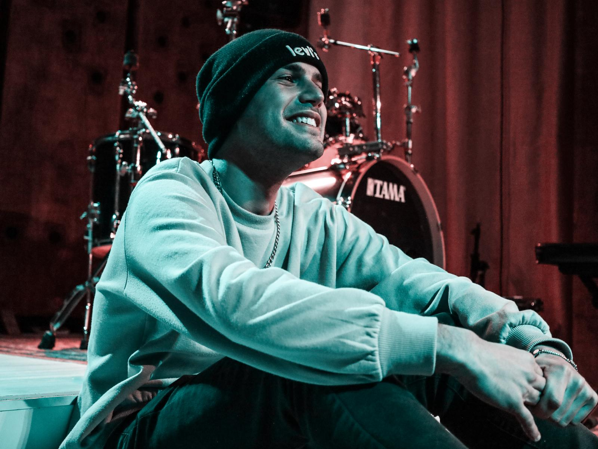

Francesco Lega è un Mix Engineer e Sound Designer laureato in Musica Elettronica, specializzato nella produzione, registrazione e finalizzazione audio professionale.
Nel corso del suo percorso artistico e tecnico ha collaborato a produzioni appartenenti a diversi contesti musicali contemporanei, tra cui pop, rock, indie, trap e rap, sviluppando una visione moderna e versatile del suono.
Parallelamente ha preso parte a progetti di musica classica ed elettroacustica, lavorando a performance e produzioni ospitate in importanti contesti internazionali, tra cui il prestigioso Konzerthaus di Vienna.
Il suo approccio unisce competenze tecniche, ricerca sonora e sensibilità artistica, con particolare attenzione alla spazialità, all’equilibrio del mix e all’identità sonora di ogni progetto, accompagnando artisti e produzioni verso un risultato professionale, moderno e curato in ogni dettaglio.